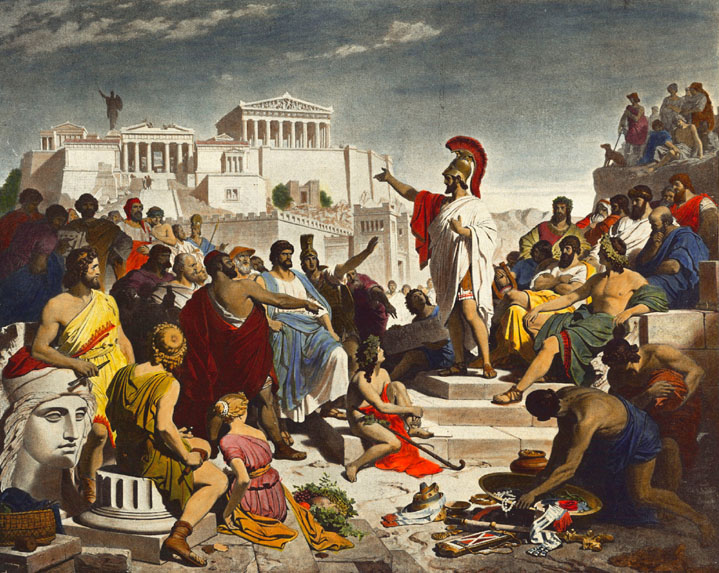
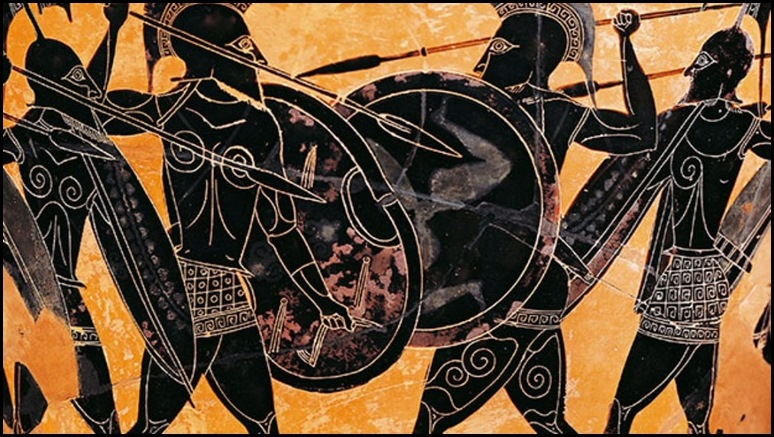
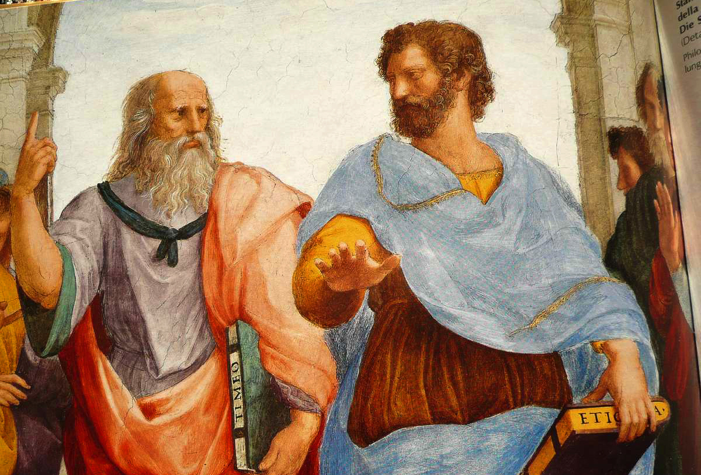

Az ókori Görögországban két kiemelkedő városállam, Spárta és Athén, jelentős szerepet játszottak a történelem alakulásában és a kultúra formálásában. Spárta militarista társadalma az erő és a fegyelem jegyében állt, míg Athén demokratikus rendszerrel és kulturális gazdagsággal volt híres.
Athén, másrészt, a demokrácia bölcsője volt. Az athéni polgárok aktívan részt vettek a politikai életben, és a közügyekben való részvétel volt az állampolgári kötelesség. Az athéni demokrácia lehetővé tette az állampolgárok széleskörű részvételét a döntéshozatalban, ami elősegítette az önkifejezést és az egyéni szabadságot.

Spárta, az antik világban a szigorú és rendkívül militarizált társadalom jelképe volt. A spártaiak gyermektől kezdve szigorú nevelésben részesültek, ahol a fizikai erőnlét és a harci készségek fejlesztése volt a fő hangsúly. Spárta katonái, akik híresek voltak a rendkívüli harci képességeikről és az egységes hadseregükről, szinte legendásak lettek az ókorban.

A görög filozófusok, mint például Szókratész, Platón és Arisztotelész, az antik világ gondolkodásának és tudományának sarokkövei voltak. Filozófiájuk és tanításaik mélyen befolyásolták a nyugati gondolkodást, és sok esetben azóta is relevánsak maradtak. Szókratész módszerei, Platón idealizált állama és Arisztotelész etikai és politikai tanításai mind a görög filozófia különböző ágait képviselik, és gazdag örökséget hagytak maguk után.

Az antik görög építészet a klasszikus stílus széles skáláját felölelte, mely a templomoktól és színházaktól kezdve a középületeken és köztereken át egészen a magánszállásokig terjedt. Az építészetben nagy hangsúlyt fektettek az arányokra, a szimmetriára és az esztétikai szépségre. Az ókori görög építészet olyan csodálatos alkotásokat hozott létre, mint a parthenoni Akropolisz Athénban, vagy a spártai agorák. Ez a stílus és technika jelentősen befolyásolta a későbbi európai építészeti fejleményeket is.

| Jellemző | Athén | Spárta |
|---|---|---|
| Társadalom | Demokratikus, aktív polgári részvétel | Militarista, szigorú hierarchia és fegyelem |
| Nevelés | Sokoldalú oktatás, beleértve az irodalmat, művészeteket és sportokat | Fő hangsúly a fizikai erőnléten és harcon |
| Politikai rendszer | Demokratikus, közvetlen polgári részvétel | Oligarchikus, katonai kormányzás |
| Kulturális hagyományok | Gazdag irodalmi, művészeti és filozófiai élet | Fő hangsúly a harci életmód és hagyományokon |
| Külpolitika | Inkább diplomáciai megközelítés és kereskedelem | Törekvés az uralomra és a militarizmusra |
| Filozófia | Kiemelkedő filozófusok, mint Szókratész, Platón és Arisztotelész | Kevesebb hangsúly, kevesebb ismert filozófus |
| Építészet | Díszes, szimmetrikus, a szépség és harmónia hangsúlyozása | Egyszerű, funkcionális, kevésbé díszes |